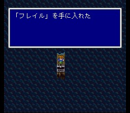
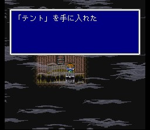
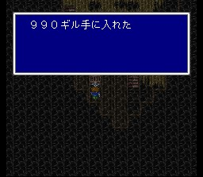
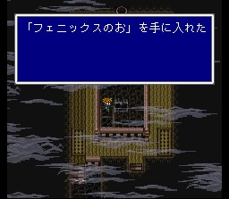
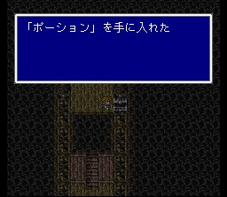
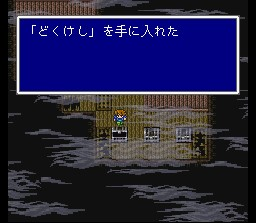
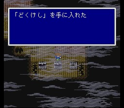
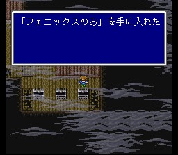
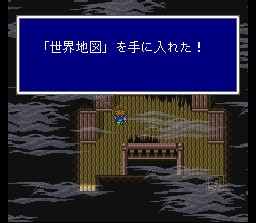

배들의 묘지
배는 표류한 끝에 배들의 잔해가 모여 있는 '배들의 묘지'에 도착합니다.
여기는 언데드들 소굴입니다. 케알, 파이어, 선더, 에어로 등을 준비합시다. 언데드러스크는
가끔 에텔을 가지고 있으니 MP가 떨어졌을 때 훔치기를 시도해보는 것도..
처음
부분에서 아래쪽을 잘 찾아 보면 플레일을 얻을 수 있습니다. 그 외에도 가면서 아이템들
챙기시고.. 세계지도도 있으니 웬만하면 챙겨 갑시다.

진행하다 보면 중간에 세이브 포인트가 있으니 별로 HP나 MP가 별로 쪼들릴 일은 없을 겁니다. 그리고 이 곳에서 파리스의 성별이 밝혀지는 이벤트가 일어납니다.
상륙하면 보스, 세이렌이 기다립니다. 세이렌은 가족의 환영으로
일행을 유혹하고..(이 환영 중 뒤에서 동료가 되는 인물이 등장!) 기억이 없는 가라프만이
유혹에 빠지지 않고, 일행들을 각성시킨 후 세이렌과 맞섭니다!
평상시에는
직접공격 위주로, 언데드가 되면 파이어와 케알로 공격합시다. 언데드 때에는 방어력이
강해지므로 전원 마도사가 되면 훨씬 수월해지지만 그렇게까지 하지 않아도 그리
어렵지는 않습니다. 정상일 때 잡으면 브론즈 아머를, 언데드일 때 잡으면 브론즈
실드를 줍니다.